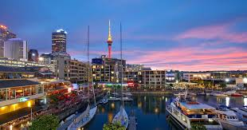
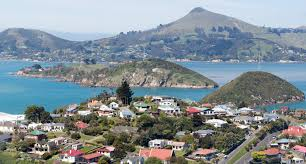
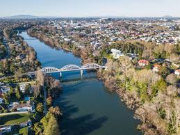

Explore New Zealand
Use the interactive map below to discover more about New Zealand's iconic locations...

Wellington - The capital city of New Zealand, known for its vibrant arts scene and waterfront promenade.

Auckland - A bustling city surrounded by two harbours, offering stunning views and rich cultural experiences.
Christchurch - The Garden City of New Zealand, famous for its English heritage and beautiful parks.

Dunedin - Known for its Scottish heritage and Victorian architecture, this city is rich in culture and history.

Hamilton - A city set on the banks of the Waikato River, known for its beautiful gardens and vibrant community.